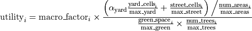
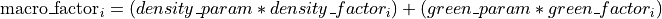

Model
The model objective is to find the n “best” cells where place a green cell.
The best n cells are chosen as those with the highest utility function.
The utility function for the cell  is defined as:
is defined as:

macro_factor, which acts as a multiplicative factor to the “real” utility function. It is composed by the green space and the population density of the whole “area statistica”, where the actual cell is. The macro factor increases proportionally with respect to the population density and inversely with respect to the green space. The impact of population density and green space can be regulated by density_param and green_param, which spans in a range [0, 1];

street_cells: streets area inside the cell, using the parameter beta_street we can regulate which pecentage of street we are considering during the green placement;
yard_cells: yard area inside the cell, using the parameter alpha_yard we can regulate which pecentage of yards we are considering during the green placement;
num_areas: the number of yard_cells inside a cell. The higher it is this number the more the yard area is fragmented;
green_space: the amount of green area already present in the cell;
num_trees: the number of trees in the cell.